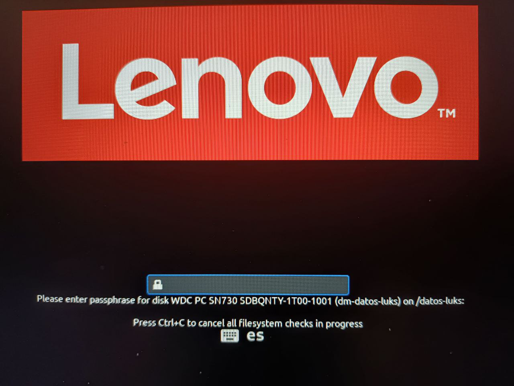

Encriptación de partición de datos con LUKS
Entre otros servicios, Educamadrid nos ofrece a los profesores un espacio en un servidor owncloud donde almacenar y compartir ficheros con seguridad, incluso con información sensible acerca de nuestros alumnos. Para facilitar su uso, tengo instalada la aplicación cliente, que sincroniza los ficheros directamente con mi disco sin necesidad de usar la aplicación web.
El problema es que, aunque el servidor cumple con las normas de protección de datos, necesito dar garantías de confidencialidad en mi disco duro. En linux, una opción es usar una partición encriptada mediante LUKS.
Utilizando KDE Partition Manager he reducido mi partición de datos para hacer sitio a una nueva partición. Después, he creado la partición nueva con ext4 y LUKS.
Figura 1: Creación de partición con ext4 y LUKS
El resultado final es el siguiente: una partición de datos sin encriptar, una partición encriptada, y una partición de swap
Figura 2: Disposición final del disco
Esta partición puede utilizarse sin más desde el explorador de ficheros dolphin. Al hacer doble click sobre la unidad, se pide la contraseña para poder montar la partición como una unidad extraíble.
Figura 3: El explorador dolphin monta la unidad encriptada como si fuera extraíble
1. crypttab
Para conseguir que la unidad sea operativa desde el arranque del sistema, es necesario modificar los ficheros /etc/fstab y /etc/crypttab.
El fichero crypttab es utilizado para configurar el módulo dm-crypt (posiblemente con el comando cryptsetup). Cada línea indica:
- El nombre del dispositivo que tendrá el disco desencriptado. Aparecerá en
/dev/mapper - El disco encriptado. Puede utilizarse el nombre del dispositivo (por ejemplo,
/dev/nvme0n1p3/), o su UUID - La contraseña para desencriptar el disco. Si se usa
none, la contraseña se pedirá desde la consola. - Una lista de opciones
En mi caso, los contenidos de este fichero son:
dm-luks-drive UUID=f55416a8-8bf9-4aa6-b2d1-0a298e741196 none
2. fstab
Para tener un punto de montaje fijo en el directorio /drive-encriptado, añado el disco ya desencriptado a fstab:
/dev/mapper/dm-luks-drive /drive-encriptado ext4 errors=remount-ro 0 1
3. Resultado final
Como resultado final, cuando el ordenador vuelve de hibernación o stand-by, está protegido por la contraseña de usuario. La contraseña del disco solo se pide al reiniciar el ordenador.
En el caso de pérdida del equipo, los datos permanecerán encriptados aunque se intente extraer directamente del disco.

Figura 4: Arranque del sistema pidiendo contraseña LUKS